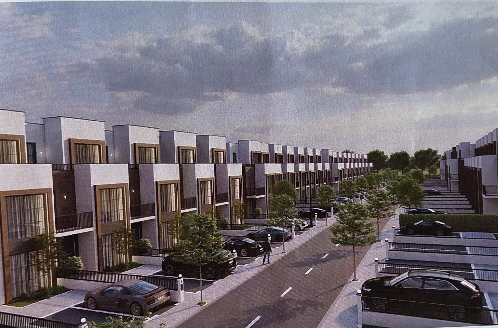
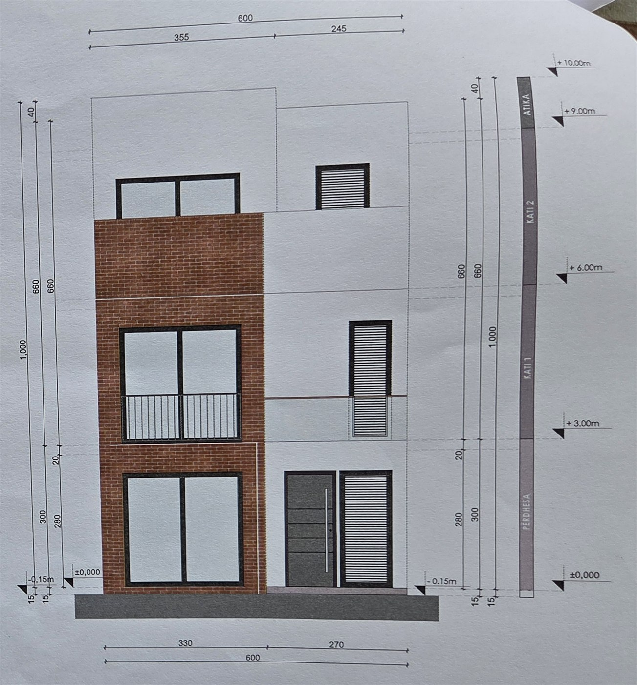
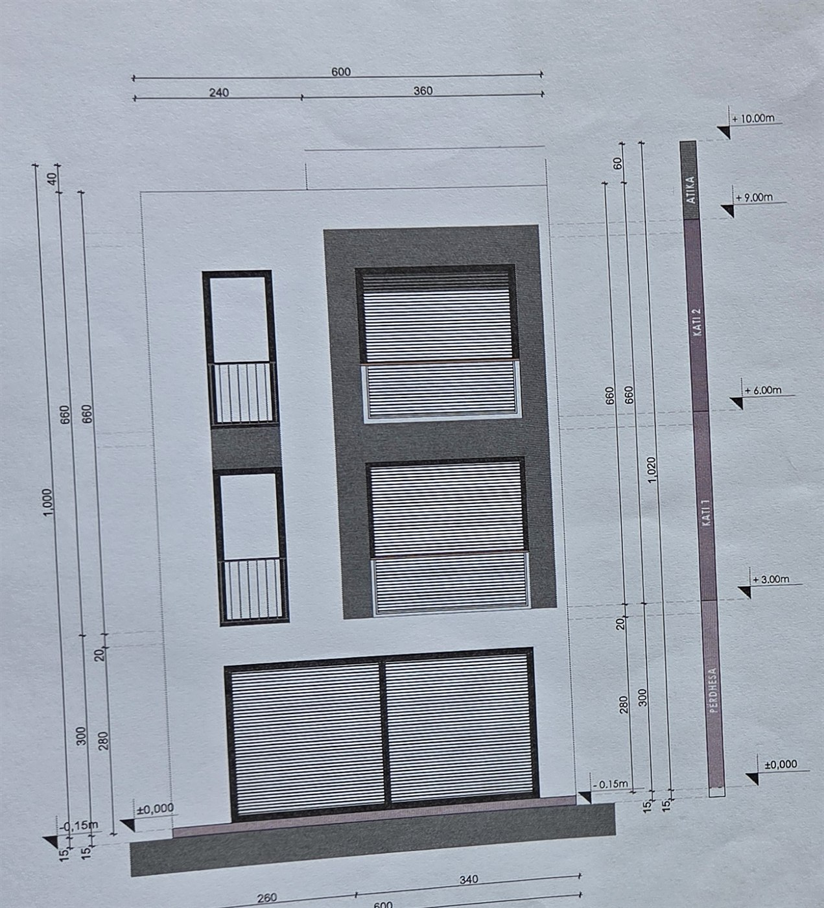

03
River Side — Village
Shtëpia bën pjesë në kompleksin River Side — Village, një rrugë e tërë shtëpish në varg me parkim para hyrjes dhe gjelbërim mes parcelave. Modeli 2, tipi i kësaj shtëpie, përsëritet 35 herë brenda kompleksit.


Në ndërtim · Modeli 2 · Nr. 7
203,71 m² bruto mbi tri kate — hapësirë ditore e hapur në përdhesë, pesë dhoma gjumi, tre banjo dhe një tarracë e tërhequr nga fasada.
01
Zgjidhni katin, pastaj klikoni mbi një dhomë në plan për ta parë sipërfaqen, përfundimin dhe perimetrin e saj.
Dhomat e katit
Planet e paraqitura janë fletët origjinale të projektit zbatues të NITI Construction, të pastruara vetëm për lexueshmëri — kuotat dhe sipërfaqet janë ato të arkitektit, pa asnjë rivizatim.
02
Kati bazë në ±0.00, katet në +3.00 dhe +6.00, atika në +9.00 dhe kreu i kulmit në +10.00 m. Lartësia e lirë e kateve është 2,80 m.


03
Shtëpia bën pjesë në kompleksin River Side — Village, një rrugë e tërë shtëpish në varg me parkim para hyrjes dhe gjelbërim mes parcelave. Modeli 2, tipi i kësaj shtëpie, përsëritet 35 herë brenda kompleksit.
04
Kompleksi River Side — Village. Klikoni hartën për ta lëvizur, ose hapeni drejt në aplikacionin tuaj të navigimit.
05
Çmimi caktohet me marrëveshje. Telefononi për detaje, dokumentacion dhe një vizitë në objekt.
Shtëpia është në ndërtim — vizitat organizohen sipas fazës së punimeve.